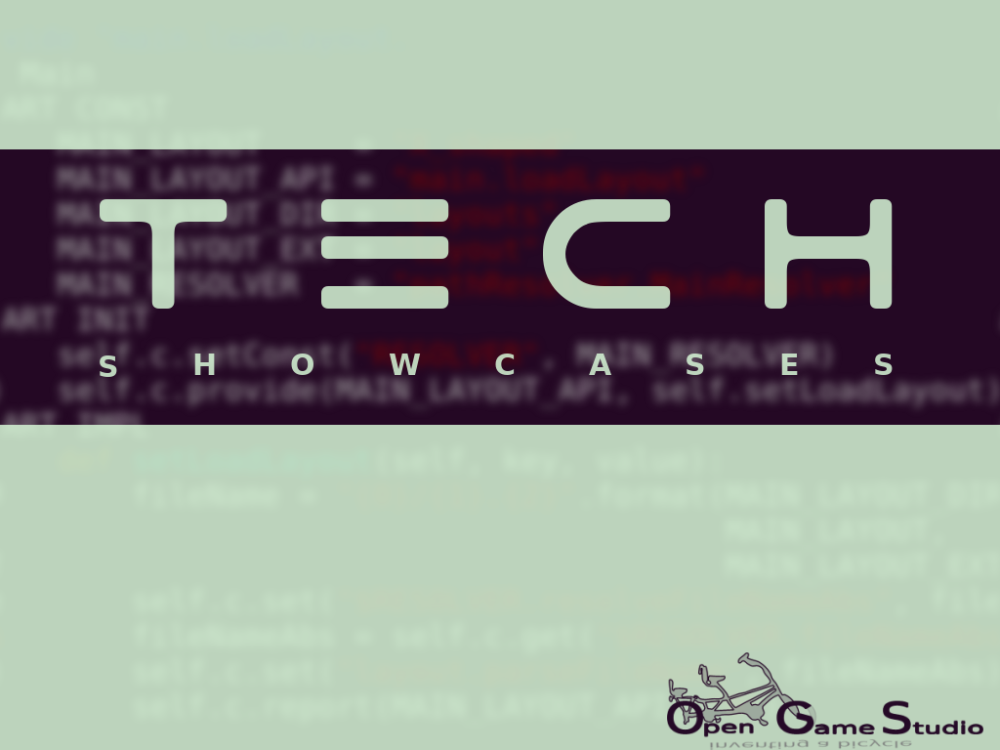

News
Technology showcases
2016-10-31 00:00

In this article, we take another look at 2015-2016 live sessions' format and introduce a new showcase format for 2017.
2015 and 2016: live sessions.. . .
September 2016 recap
2016-10-11 00:00

This article explains September 2016 live session stages: draft, rehearsal, live session itself, and publishing.
Even though live session takes only a few hours, we devote a whole month to prepare for it. Let's have a look at live session stages in detail.. . .
OGS Editor 0.10 and live session materials
2016-10-03 00:00

Note: we won't release 0.10 for macOS due to technical difficulties with the build system. macOS support will be back for 0.11.
- OGS Editor 0.10 is available at SourceForge. Simply unpack the archive and launch the run script.. . .
A few words about live session yesterday
2016-09-26 00:00
Mahjong Solitaire was successfully created, and it took less than 4 hours. . . .
Live session is in 24 hours
2016-09-24 00:00
Get ready for live session, it's about to happen in 24 hours!. . .
Live session: 25 September 2016
2016-09-17 00:00
We will hold live session on 25 September 2016 at 12:00 CEST. . .
August 2016 recap
2016-09-03 00:00

This article explains the most important technical details about development in August: UIQt module, its refactoring, a new feature based development approach, and its benefits.. . .
We’re back to social networks
2016-08-18 00:00
Once Mahjong – always Mahjong
2016-08-10 00:00
We started Opensource Game Studio project a long time ago. We wanted to provide open source community with tools to create games. However, it was unclear what tools' purpose was. So we decided to start small: create a game first.. . .
Page 4 of 7